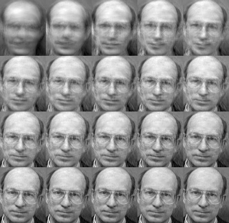

Saving and Loading a FaceRecognizer¶
Introduction¶
Saving and loading a FaceRecognizer is very important. Training a FaceRecognizer can be a very time-intense task, plus it’s often impossible to ship the whole face database to the user of your product. The task of saving and loading a FaceRecognizer is easy with FaceRecognizer. You only have to call FaceRecognizer::load() for loading and FaceRecognizer::save() for saving a FaceRecognizer.
I’ll adapt the Eigenfaces example from the Face Recognition with OpenCV: Imagine we want to learn the Eigenfaces of the AT&T Facedatabase, store the model to a YAML file and then load it again.
From the loaded model, we’ll get a prediction, show the mean, Eigenfaces and the image reconstruction.
Using FaceRecognizer::save and FaceRecognizer::load¶
The source code for this demo application is also available in the src folder coming with this documentation:
1 2 3 4 5 6 7 8 9 10 11 12 13 14 15 16 17 18 19 20 21 22 23 24 25 26 27 28 29 30 31 32 33 34 35 36 37 38 39 40 41 42 43 44 45 46 47 48 49 50 51 52 53 54 55 56 57 58 59 60 61 62 63 64 65 66 67 68 69 70 71 72 73 74 75 76 77 78 79 80 81 82 83 84 85 86 87 88 89 90 91 92 93 94 95 96 97 98 99 100 101 102 103 104 105 106 107 108 109 110 111 112 113 114 115 116 117 118 119 120 121 122 123 124 125 126 127 128 129 130 131 132 133 134 135 136 137 138 139 140 141 142 143 144 145 146 147 148 149 150 151 152 153 154 155 156 157 158 159 160 161 162 163 164 165 166 167 168 169 170 171 172 173 174 175 176 177 178 179 180 181 182 183 184 185 186 187 188 189 190 191 192 193 194 195 196 197 198 199 200 | /*
* Copyright (c) 2011. Philipp Wagner <bytefish[at]gmx[dot]de>.
* Released to public domain under terms of the BSD Simplified license.
*
* Redistribution and use in source and binary forms, with or without
* modification, are permitted provided that the following conditions are met:
* * Redistributions of source code must retain the above copyright
* notice, this list of conditions and the following disclaimer.
* * Redistributions in binary form must reproduce the above copyright
* notice, this list of conditions and the following disclaimer in the
* documentation and/or other materials provided with the distribution.
* * Neither the name of the organization nor the names of its contributors
* may be used to endorse or promote products derived from this software
* without specific prior written permission.
*
* See <http://www.opensource.org/licenses/bsd-license>
*/
#include "opencv2/contrib/contrib.hpp"
#include "opencv2/core/core.hpp"
#include "opencv2/highgui/highgui.hpp"
#include <iostream>
#include <fstream>
#include <sstream>
using namespace cv;
using namespace std;
static Mat norm_0_255(InputArray _src) {
Mat src = _src.getMat();
// Create and return normalized image:
Mat dst;
switch(src.channels()) {
case 1:
cv::normalize(_src, dst, 0, 255, NORM_MINMAX, CV_8UC1);
break;
case 3:
cv::normalize(_src, dst, 0, 255, NORM_MINMAX, CV_8UC3);
break;
default:
src.copyTo(dst);
break;
}
return dst;
}
static void read_csv(const string& filename, vector<Mat>& images, vector<int>& labels, char separator = ';') {
std::ifstream file(filename.c_str(), ifstream::in);
if (!file) {
string error_message = "No valid input file was given, please check the given filename.";
CV_Error(CV_StsBadArg, error_message);
}
string line, path, classlabel;
while (getline(file, line)) {
stringstream liness(line);
getline(liness, path, separator);
getline(liness, classlabel);
if(!path.empty() && !classlabel.empty()) {
images.push_back(imread(path, 0));
labels.push_back(atoi(classlabel.c_str()));
}
}
}
int main(int argc, const char *argv[]) {
// Check for valid command line arguments, print usage
// if no arguments were given.
if (argc < 2) {
cout << "usage: " << argv[0] << " <csv.ext> <output_folder> " << endl;
exit(1);
}
string output_folder = ".";
if (argc == 3) {
output_folder = string(argv[2]);
}
// Get the path to your CSV.
string fn_csv = string(argv[1]);
// These vectors hold the images and corresponding labels.
vector<Mat> images;
vector<int> labels;
// Read in the data. This can fail if no valid
// input filename is given.
try {
read_csv(fn_csv, images, labels);
} catch (cv::Exception& e) {
cerr << "Error opening file \"" << fn_csv << "\". Reason: " << e.msg << endl;
// nothing more we can do
exit(1);
}
// Quit if there are not enough images for this demo.
if(images.size() <= 1) {
string error_message = "This demo needs at least 2 images to work. Please add more images to your data set!";
CV_Error(CV_StsError, error_message);
}
// Get the height from the first image. We'll need this
// later in code to reshape the images to their original
// size:
int height = images[0].rows;
// The following lines simply get the last images from
// your dataset and remove it from the vector. This is
// done, so that the training data (which we learn the
// cv::FaceRecognizer on) and the test data we test
// the model with, do not overlap.
Mat testSample = images[images.size() - 1];
int testLabel = labels[labels.size() - 1];
images.pop_back();
labels.pop_back();
// The following lines create an Eigenfaces model for
// face recognition and train it with the images and
// labels read from the given CSV file.
// This here is a full PCA, if you just want to keep
// 10 principal components (read Eigenfaces), then call
// the factory method like this:
//
// cv::createEigenFaceRecognizer(10);
//
// If you want to create a FaceRecognizer with a
// confidence threshold (e.g. 123.0), call it with:
//
// cv::createEigenFaceRecognizer(10, 123.0);
//
// If you want to use _all_ Eigenfaces and have a threshold,
// then call the method like this:
//
// cv::createEigenFaceRecognizer(0, 123.0);
//
Ptr<FaceRecognizer> model0 = createEigenFaceRecognizer();
model0->train(images, labels);
// save the model to eigenfaces_at.yaml
model0->save("eigenfaces_at.yml");
//
//
// Now create a new Eigenfaces Recognizer
//
Ptr<FaceRecognizer> model1 = createEigenFaceRecognizer();
model1->load("eigenfaces_at.yml");
// The following line predicts the label of a given
// test image:
int predictedLabel = model1->predict(testSample);
//
// To get the confidence of a prediction call the model with:
//
// int predictedLabel = -1;
// double confidence = 0.0;
// model->predict(testSample, predictedLabel, confidence);
//
string result_message = format("Predicted class = %d / Actual class = %d.", predictedLabel, testLabel);
cout << result_message << endl;
// Here is how to get the eigenvalues of this Eigenfaces model:
Mat eigenvalues = model1->getMat("eigenvalues");
// And we can do the same to display the Eigenvectors (read Eigenfaces):
Mat W = model1->getMat("eigenvectors");
// Get the sample mean from the training data
Mat mean = model1->getMat("mean");
// Display or save:
if(argc == 2) {
imshow("mean", norm_0_255(mean.reshape(1, images[0].rows)));
} else {
imwrite(format("%s/mean.png", output_folder.c_str()), norm_0_255(mean.reshape(1, images[0].rows)));
}
// Display or save the Eigenfaces:
for (int i = 0; i < min(10, W.cols); i++) {
string msg = format("Eigenvalue #%d = %.5f", i, eigenvalues.at<double>(i));
cout << msg << endl;
// get eigenvector #i
Mat ev = W.col(i).clone();
// Reshape to original size & normalize to [0...255] for imshow.
Mat grayscale = norm_0_255(ev.reshape(1, height));
// Show the image & apply a Jet colormap for better sensing.
Mat cgrayscale;
applyColorMap(grayscale, cgrayscale, COLORMAP_JET);
// Display or save:
if(argc == 2) {
imshow(format("eigenface_%d", i), cgrayscale);
} else {
imwrite(format("%s/eigenface_%d.png", output_folder.c_str(), i), norm_0_255(cgrayscale));
}
}
// Display or save the image reconstruction at some predefined steps:
for(int num_components = 10; num_components < 300; num_components+=15) {
// slice the eigenvectors from the model
Mat evs = Mat(W, Range::all(), Range(0, num_components));
Mat projection = subspaceProject(evs, mean, images[0].reshape(1,1));
Mat reconstruction = subspaceReconstruct(evs, mean, projection);
// Normalize the result:
reconstruction = norm_0_255(reconstruction.reshape(1, images[0].rows));
// Display or save:
if(argc == 2) {
imshow(format("eigenface_reconstruction_%d", num_components), reconstruction);
} else {
imwrite(format("%s/eigenface_reconstruction_%d.png", output_folder.c_str(), num_components), reconstruction);
}
}
// Display if we are not writing to an output folder:
if(argc == 2) {
waitKey(0);
}
return 0;
}
|
Results¶
eigenfaces_at.yml then contains the model state, we’ll simply look at the first 10 lines with head eigenfaces_at.yml:
philipp@mango:~/github/libfacerec-build$ head eigenfaces_at.yml
%YAML:1.0
num_components: 399
mean: !!opencv-matrix
rows: 1
cols: 10304
dt: d
data: [ 8.5558897243107765e+01, 8.5511278195488714e+01,
8.5854636591478695e+01, 8.5796992481203006e+01,
8.5952380952380949e+01, 8.6162907268170414e+01,
8.6082706766917283e+01, 8.5776942355889716e+01,
And here is the Reconstruction, which is the same as the original:
Help and Feedback
You did not find what you were looking for?- Ask a question on the Q&A forum.
- If you think something is missing or wrong in the documentation, please file a bug report.